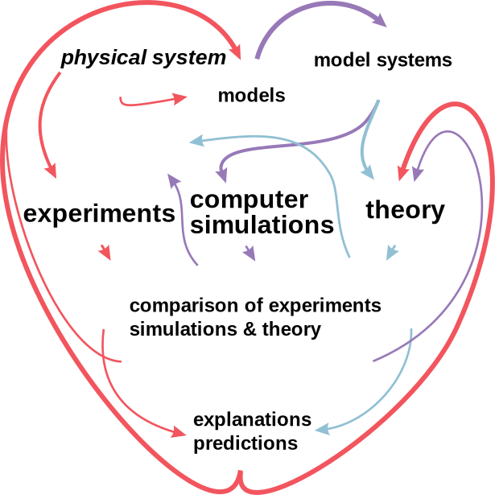

Introduction to computational modeling & methods in chemistry/physics
Contents
2. Introduction to computational modeling & methods in chemistry/physics¶
-Last updated on Thursday, January 06 2022 at 22:57
{kind=link}
Learning goals:
To have a basic idea of computational modeling and computational chemistry.
To get some historical background.
To understand the relation between experiments, theory and computation.
To understand the need for different models and their relations. Several methods and models that will be discussed later in the course will be mentioned. The aim is to make the students acquainted to the terminology and make them comfortable in using the terms and termonology a litte-by-little over the course.
Note: The links are provided for those who wish to have some additional reading.
Keywords: Computational chemistry, scientific computing, multiscale modeling, high performance computing, history of computing
2.1. Computing and computers¶
More:
Video: Computer Pioneers: Pioneer Computers Part 1 by Computer History Museum
Video: Computer Pioneers: Pioneer Computers Part 2 by Computer History Museum
2.2. Background¶
Computational chemistry and physics are relatively young fields - easy to understand since the first digital (in contrast to mechanical) computers were developed in the late 1930’s. The first programmable computer, the Z1, was developed by Konrad Zuse in Germany in the late 1930’s. The early developments in programmable digital computers were largely driven by military applications in 1940’s and 1950’s.
The earliest computers were not reliable or stable, or were built more as calculators for a single purpose. ENIAC (Electronic Numerical Integrator and Computer) that was built in 1946 is often said to be the first real computer. Transistors did not exist at that time and ENIAC (in Philadelphia) had 17,480 vacuum tubes. Its original purpose was to determine trajectories for ballistic missiles, but due to the war ending it was used to study nuclear reactions. Nuclear warhead and storage related simulations are still one of the main uses of the largest supercomputers. One additional notable aspect of ENIAC is that, unlike modern computers, it was not able to store programs.
ENIAC was followed by MANIAC I (Mathematical Analyzer Numerical Integrator And Computer Model I at Los Alamos) and it was used in the landmark paper “Equations of State Calculations by Fast Computing Machines”:cite:`Metropolis1953` by Metropolis et al. that introuced the Metropolis Monte Carlo method, one of the most used and important algorithms even today. MANIAC was also used in the development of the hydrogen bomb. Generalization of the Metropolis Monte Carlo method is known as the Markov Chain Monte Carlo and it is important in fields such as optimization and machine learning. On pure chemistry side, the earliest computational papers appeared in the 1960’s and the term computational chemistry was (probably; hard to trace) first used in 1970’s.
Independent if one talks about physics, chemistry or some other field, the development can be divided roughly in the theoretical developments in the field, developments of numerical methods and algorithms, and hardware. The development of numerical methods cannot be over-emphasized as it is critical to be able to model and simulate larger systems and for longer times. This will become clear as we discuss various methods and how they scale in terms of the number of degrees of freedom.
Currently, computational approaches such as hybrid methods that combine quantum mechanical and classical molecular dynamics and coarse-grained methods have gained a lot of popularity. Methods that combine different time and/or length scales can in general be called multiscale methods and this will be discussed in more detail later. In addition, methods that go under the term machine learning are perhaps the most rapidly growing family of methods and they are applied in almost all imaginable fields from medicine to digital humanities and computational chemistry. Machine learning is not a simulation method as such, but rather a class of methods that allows classification (clustering), analyses and model building using large data sets. Machine learning methods rely heavily on statistics, linear algebra and stochastic methods such as Markov processes. We will discuss such methods later.
{kind=link}
Fig. 2.1 Computational modeling in chemistry, physics and engineering require deep background knowledge from a number of fields.¶
More:
2.3. What is computational chemistry?¶
It is difficult to define what exactly computational chemistry is or is not. Wikipedia defines quite broadly (and one could say adeqately) as follows:
"Computational chemistry is a branch of chemistry that uses computer simulation to assist in solving chemical problems. It uses methods of theoretical chemistry, incorporated into efficient computer programs, to calculate the structures and properties of molecules and solids. It is necessary because, apart from relatively recent results concerning the hydrogen molecular ion (dihydrogen cation, see references therein for more details), the quantum many-body problem cannot be solved analytically, much less in closed form. While computational results normally complement the information obtained by chemical experiments, it can in some cases predict hitherto unobserved chemical phenomena. It is widely used in the design of new drugs and materials. "
Although the field of computational chemistry didn’t exist in the 1830’s, Auguste Comte, the philosopher behind positivism, stated that it is impossible and destructive to try to study chemistry using mathematics (and as an extrapolation by computers):
"Every attempt to employ mathematical methods in the study of chemical questions must be considered profoundly irrational and contrary to the spirit of chemistry.... if mathematical analysis should ever hold a prominent place in chemistry - an aberration which is happily almost impossible - it would occasion a rapid and widespread degeneration of that science." -Auguste Comte, Cours de philosophie positive, 1830
This view is, if course, very fitting with the idea of positivisim and wrong (or ‘not even wrong’) in terms of science as it defies the existence of predictive theories.
Rather than trying to provide a strict defintion or classification as what computational chemistry is, let’s rather list methods and approaches use by computational chemists - after all computational chemistry includes various simulation techniques, structural analysis, using computers to design or predict new molecules or/and molecular binding, and data mining from experimental and/or computational results. It is also hard - and unnecessary - to draw strict defintion between computational chemistry, physics or, say, chemical engineering or pharmacy/drug design. Although these fields all have their own special characteristics, from the computational perspective they share the same methods and methodologies many of them, especially when it come to algorithms and computational techniques, come from applied mathematics and computer science. Right now, we restrict ourselves just to provide and a list and we will discuss some of them in detail later. For most part here, we focus on simulation and we will also discuss some analysis and machine learning techniques. What is also common to the computational disciplines is that one needs in-depth knowledge across traditional disciplines.
Quantum mechanical methods: ab initio methods, density functional theory, Car-Parrinello simulations
Classical molecular dynamics, steered molecular dynamics, non-equilibrium molecular dynamics
Coarse-grained molecular dynamics
Lattice-Boltzmann simulations
Phase field simulations
Finite element methods
Monte Carlo techniques
Optimization techniques
Machine learning methods, Bayesian techniques, Markov models, deep learning
Free energy calculations
… and the list goes on. This (by necessity incomplete) list aims to convey the idea that the field is very broad with no clear boundries.
Don’t miss these short videos:
2.4. Nobel Prizes to Computational Chemistry: 1998 and 2013¶
To date, the Nobel Prize is Chemistry has been awarded twice to computational chemists - thus far no Nobel Prizes have been granted directly to computational physics. The first computational chemistry Nobel was 1998, when Walter Kohn (see also his biographical notes), “for his development of the density-functional theory”, and John A. Pople (see also his biographical notes), “for his development of computational methods in quantum chemistry”, were the recipients. Kohn was born in Austria, escaped the nazis to Canada and received his BSc in Applied Mathematics at the University of Toronto. He moved to study physics at Harvard for his PhD. His PhD supervisor was Julian Schwinger, 1965 Nobel Laureate in Physics. He was at the University of California in Santa Barbara at the time of his Prize. Kohn passed away in 2016 at the age of 93. Sir John Pople received his PhD in Mathematics from Cambridge. He was at Northwestern University at the time of the Nobel Prize. He passed away in 2004 at the age of 78. Pople is one of the authors of the first version of the software suite Gaussian. Pople’s PhD supervisor was Sir John Lennard-Jones, the Lennard-Jones potential used in almost all classical molecular dynamics simulations is named after him.
The second Nobel Prize to computational chemistry came in 2013 when it was awarded to Martin Karplus, Michael Levitt and Arieh Warshel “for the development of multiscale models for complex chemical systems.” The press release of the Royal Swedish Academy of Science stated the importance of computational chemistry very clearly:
"Today the computer is just as important a tool for chemists as the test tube. Simulations are so realistic that they predict the outcome of traditional experiments." -Pressmeddelande, Kungliga Vetenskapsakademien
Like Kohn, Martin Karplus was born in Vienna, Austria and moved to the USA to escape the nazis. He did his PhD in chemistry at Caltech with the two-time Nobel Laureate Linus Pauling. He is the originator of the CHARMM molecular simulation package. Karplus was at Université de Strasbourg and Harvard at the time of the Prize. Arieh Warshel was postdoc (1970) with Karplus’ at Harvard in Chemical Physics. He went to the Weizmann Institute in Isreal for a faculty job but moved later to the University of Southern California after Weizmann didn’t grant him tenure. Michael Levitt was born in Pretoria, South Africa and he did his PhD in Biophysics at Cambridge. At the time of the Prize he was at Stanford where he is a professor of Structural Biology. As a side note on tenure and Nobel Prizes, Nobel winners that were not given tenure include at least Tom Sargent (Economics 2011; University of Pennsylvania didn’t give tenure), Lars Onsager (Chemistry 1968; dismissed/let go by both John’s Hopkins and Brown universities).
{kind=link}
Fig. 2.2 Walter Kohn.¶
{kind=link}
Fig. 2.3 John Pople.¶
{kind=link}
Fig. 2.4 Martin Karplus.¶
{kind=link}
Fig. 2.5 Arieh Warshel.¶
{kind=link}
Fig. 2.6 Michael Levitt.¶
More:
Nobel Prize facts from the Nobel Foundation. Includes a lot of interesting information including prizes to married couples, mother/father & child and so on.
2.4.1. Other notable prizes in computational chemistry & physics¶
Since we got into the Nobel Prizes, let’s list a few others. Probably the best know is the Berni J. Alder CECAM Prize, the acronym CECAM comes from Centre Européen de Calcul Atomique et Moléculaire and it is currently headquartered at the École polytechnique fédérale de Lausanne (EPFL) in Switzerland. CECAM is a pan-European organization and on the practical side it is well-known for its workshops, summer schools and conferences. The Prize, named after Berni Alder one of the pioneers of molecular simulations, is granted every three years. The prize was established in 1999 and has thus far been granted to
2019: Sauro Succi, Italian Institute of Technology, Center for Life Nanosciences at La Sapienza in Rome, for his pioneering work in lattice-Boltzmann (LB) simulations.
2016: David M Ceperley, Department of Physics, University of Illinois at Urbana-Champaign and Eberhard Gross, Max Planck Institute of Microstructure Physics, Halle for “fundamental ground-breaking contributions to the modern field of electronic structure calculations”.
2013: Herman J.C. Berendsen and Jean-Pierre Hansen, Groningen and Cambridge for “outstanding contributions to the developments in molecular dynamics and related simulation methods”
2010: Roberto Car (Princeton) and Michele Parrinello (ETH Zürich) for “their invention and development of an ingenious method that, by unifying approaches based on quantum mechanics and classical dynamics, allows computer experiments to uncover otherwise inaccessible aspects of physical and biological sciences”
2007: Daan Frenkel, Cambridge.
2004: Mike Klein, Temple University. The committee wrote: “Mike Klein’s leadership has been crucial in the development of a variety of computational tools such as constant-temperature Molecular Dynamics, Quantum simulations (specifically path-integral simulations), extended-Lagrangian methods and multiple-timestep Molecular Dynamics”
2001: Kurt Binder, University of Mainz “for pioneering the development of the Monte Carlo method as a quantitative tool in Statistical Physics and for catalyzing its application in many areas of physical research”
1999: Giovanni Ciccotti, University of Rome La Sapienza for ” pioneering contributions to molecular dynamics”
Other prizes include:
The reason for listing all these is simply to indicate how diverse the field is.
2.5. A few examples¶
Before going any further, let’s take a look some examples from simulations to get a more concrete view of what simulations can do. Further examples will be provided as we progress. These are taken from our own simulations to avoid any copyright issues. Use the blue arrow to see more movies. All of the simulations and visualizations shown in the examples were made with the tools we use in this course.
2.6. Theory and experiment vs computation¶
2.6.1. Experiments and in silico modeling¶
Computational microscope. The term computational microscope was probably introduced first by Walker and Mezey in 1995 in their article “A new computational microscope for molecules: High resolution MEDLA images of taxol and HIV-1 protease, using additive electron density fragmentation principles and fuzzy set methods”:cite:`Walker1995`. This combined imagining and density functional theory (DFT) calculations. The term was then re-introduced in the context of MD simulations by Lee et al. in their 2009 article “Discovery Through the Computational Microscope”:cite:`Lee2009`. The analogy is a very good one: molecular simulations can mimic behvior of systems in the atomic scale and they allow one to see, analyze and track the atoms. Lee et al. conclude their article by saying:cite:`Lee2009`
Overall, simulations can cast light on the basic architectural principles of molecules that explain fundamental cellular mechanics and might eventually direct the design of proteins with desired mechanical properties. Most importantly, beyond the understanding gained regarding the molecular mechanisms of force-bearing proteins, these examples serve to demonstrate that incessant advancements of MD methodology bring about discoveries stemming from simulation rather than from experiment. Molecular modeling, while useful as a means to complement many experimental methodologies, is rapidly becoming a tool for making accurate predictions and, thereby, discoveries that stand on their own. In other words, it is becoming a computational microscope.
This summarizes the situation very well. Although computation has finally gained the recognition as an independent paradigm of research with theory and experiments, every now and then one still hears the comment but it is just a simulation or it is just a model. While that can be politely dismissed, such an ignorant comment deserves an equally polemic answer: utter rubbish from a petrified mind. Independent if one is a theorist, experimentalist or computational scientist, it is imperative to have a reasonable understanding what the other methods of research can and cannot do.
2.6.2. Simulations: The 3rd paradigm of research¶
{kind=link}
With the above potentially provoking statements, it is important to keep in mind that while we are dealing with empirical sciences and any prediction has to be proven by experiments, theory and computation provide predictions and explanations for observations in a manner that is often impossible for experimentation alone. In addition, experiments have their own problems and to get a signal out of any system, one must poke it, that is, one has to perturb the system to get a response. Simulations don’t have such a limitation but can actually be used to study what the effects of probes or peturbations are on a given system. All in all, experiments, theory and simulations all have their advantages and problems and one should not consider any of them to be more superior than the others. With the rise of big data, one could even extend the methods of research to data-intensive analysis.
Simulations can be predictive and guide experiments.
Can tell what kind of perturbations experimental probes cause.
Like any other approach: has its own problems
More:
2.7. Good practices¶
Keep notes, that is have a lab book. That saves a lot of time and reduces the number of errors. Document the procedures and commands (and they can sometimes be somewhat tricky and finding them quickly without proper notes may be difficult or/and lead to errors. Lab book will help you to avoid mistakes and help you to speed up your work tremendously. One good way is to use something like a github document. That is easy to maintain and it is available from any computer. Other reasonable ways: Google docs, OneDrive, Dropbox, etc.
Always remember to back up you critical files!
When running simulations, ensure that you will not fill your computer (estimate the amount of data that will be generated and is needed for analysis).
Check for viruses
Always, always, always visualize
Always, always, always verify your simulations & system setup against known results from theory, other simulations and experiments.
Let the computer do the work!
2.8. Dangers¶
The biggest problem of any computational modeling is the user, the computer will do what it is told to do.
We have stated in our paper “The good, the bad and the user in soft matter simulations”:cite:`Wong_ekkabut_2016`:
It may sound absurd and somewhat provoking, but available simulation software (i.e., not home grown programs) becoming very user friendly and easy to obtain can almost be seen as a negative development!
Not that long ago all simulations were based on house-written programs. Such programs had obvious limitations: They were not available to others, the codes were not maintained for longer periods of time, they were often difficult to use for all but the person who wrote code. It was also difficult to improve their performance due to very limited number (often one) developers. Modern codes such as Gromacs, NAMD, LAMMPS and such in the field of molecular simulations, are well maintained, have long-term stability, extensive error checking due to large number of users and they offer excellent performance that is impossible reach for any individual developer or even a small group. They are also very easy to use.
Similarly to experiments, it is easy train a person to use the software and even produce data using the built in analysis methods. That is, however, a precarious path. It is absolutey imperative to have a very strong background in the application field and its underlying theories and methods to be able to produce something meaningful. One should never use a software package as a black box!
2.9. The need for different models¶
Just like with experiments, there is no single correct choice for a method. Choosing the most appropriate method for the task at hand depends on various issues. First and foremost, what is the phenomenon/phenomena that is being studied. For example, if one is interested in the behavior of electrons, then quantum mechanical methods are the obvious candidates. This immediately brings in additional questions such as are we interested in band structure, chemical reactions, excited states or something else. Such questions are very important since they again narrow down the choice of methods. For example, if one is studied excited states, the usual methods from density functional theory are not enough. On the other hand, if one is interested in formation of micelles or diffusion of molecules, quantum mechanical methods are useless and the more reasonable choices would be classical MD or coarse-grained MD. Why? Collective phenomena such aggregate formation doesn’t depends directly on quantum mechanical properties (although some of them are implicitly integrated in the higher level models such as classical MD). One may also be interested in static or dynamic phenomena. In the former case, optimization methods may be method of choice whereas in the latter case one needs an equation of motion that is integrated in time.
2.9.1. Terminology: Scales¶
The figure aboves show different methods and typical time scales associated with them. It is common to use the following terminology when talking about them. It is also important to notice that the scales given below are somewhat arbitrary, depend on the field and there is some overlap:
Macroscale: Roughly speaking, denotes time and length scales observable by plain eye.
Typical times >0.1 sec and lengths >1 mm
Topical associated phenomena: instabilities, pattern formation, phase separation
Some simulation methods often used to study these scales: phase field models, FEM, Monte Carlo
Mesoscale: Intermediate scales that are not quite observable directly by eye, but typically accessible by many experimental techniques. This is a very broad concept.
Typical times from \(10^{-7}\) sec up to \(10^{-1}\) sec and lengths ~\(10^{-7}\)-\(10^{-3}\) m.
Typical phenomena: instabilities, pattern formation, aggregation
Some commonly used simulation methods: phase field models, lattice Boltzmann, coarse-grained molecular dynamics, Monte Carlo
Atomistic scale: Typically indicates molecular scales.
Are in the range of \(10^{–12}\) – \(10^{-7}\) sec and \(10^{-9}\) - \(10^{-7}\)m.
Typical phenomena: microscopic mechanisms and interactions such as hydrogen bonding
Some commonly used methods: classical molecular dynamics, Monte Carlo
Subatomistic scale: Typically used to denote quantum scales.
Time and length scales below the atomistic
Typical phenomena: electronic structure, excitations, chemical reactions
Some commonly used methods: ab initio methods, Green’s functions, Monte Carlo, density functional theory
{kind=link}
2.9.2. Hybrid models¶
Fig. 2.7 lists some common models. It is important to notice that it is possible to combine, or hybridize them. The most common hybridization is perhaps the QM/MM methods, that is, combination of a quantum mechanical method with a method from the classical MD level; the acronym MM stands for molecular mechanics and it is often used synonymously with classical MD. The principle is simple: In QM/MM, a small part of the system is treated using quantum mechanics and the rest with classical (Newtonian) mechanics. Although the idea is simple, there are many complications and limitations.
Similarly to QM/MM, it is possible combine classical MD and coarse-grained MD. Another fairly common combination is lattice-Boltzmann (LB) and molecular dynamics. There, the difficulties are different since the lattice-Boltzmann method uses a grid to solve fluid motion using densities (=no explicit particles), but classical MD brings in particles. This means that the two must coupled in consistent way. Often that means using composite particles instead of ‘normal’ atoms.
2.9.3. Implicit vs explicit water¶
When simulating biomolecular systems as well as many others, water is present. Water is vary challenging for simulations since in practise most of the simulation times goes in simulation water as it is the most abundant component in any given system. This is quite easy to understand: In addition to the molecules of interest, say, proteins, lipids or polymers, for example, the simulation box needs to be filled with water at the correct density and to reach proper solvation, enough water is needed. It is not uncommon that over 90% of the simulation time goes to simulation water.
While keeping water in is naturally the most correct choice, methods have been developed to include water only implicitly - such models are called implicit solvent models. There are several strategies for doing but the Generalized Born model is probably the most commonly used one.
2.9.4. Coarse-graining¶
Coarse-graining is a process in which one tries to reduce the number of degrees of freedom in order to be able to simulate larger systems for longer times. There many approaches to coarse-grain but as a general idea, one can consider a molecule such as a lipid in the Figure and somehow determine new larger superatoms. It may sound like magic, but there is a solid theoretical procedure do that (Henderson’s theorem) but - like with everything - there are limitations and complexities.
Here is a brief list of some coarse-grained MD methods:
Direct coarse graining using the Henderson theorem.
Adaptive Resolution Simulations (AdResS).
The MARTINI model. This is the most popular approach. The name MARTINI does not refer to the drink, but the Gothic style church steeple in the city of Groningen, the Netherlands. The tower was completed in 1482 and it is the most famous landmark in the city. The developers of the model, Marrink and co-workers are based at the University of Groningen. As an unrelated note (but Canadian connection), the city of Groningen was librated by Canadian troops in World War II.
Dissipative Particle Dynamics (DPD). The DPD method is an other popular coarse-grained method. It was originally developed as a fluid flow solver at Shell laboratories by Hoogerbrugge and Koelman in 1991. The original method had, however, an error: It could not produce the correct equilibrium state with Boltzmann distribution; this is a strict requirement that arises from statistical mechanics (and it will discussed in detail later). This problem was fixed through the theoretical work of Espanol and Warren in 1995, and their formulation is the one that is universally used.
PLUM model. The PLUM model resembles MARTINI in the sense that the level of coarse-graining is the same. The philosophies of the two models are, however, different. PLUM was developed by Bereau and Deserno.
ELBA model. The ELBA model was developed by Orsi and Essex in 1991 primarly for lipid simulations. Whereas many other CG models igonre electrostatic interactions (or most of them), ELBA is unique in including them. The name ELBA comes from ‘electrostatics-based’.
SIRAH model. The name comes from ‘Southamerican Initiative for a Rapid and Accurate Hamiltonian’ and it has its origin in the Institute Pasteour de Montevideo in Urugay. SIRAH is based on a top down approach.
2.9.5. Concurrent vs sequential coarse-graining¶
As the number of different models and the existence of various hybrid models suggests, there are different approached to coarse-graining. These will not be discussed in detail, but it is good to understand the there are two philosophies: sequential and concurrent. Sequential means that data is first extracted from a higher accuracy model. That data is then used construct a coasre-grained model. In concurrent coarse-graining, CG is done on-the-fly.
2.9.6. Coarse-graining and software compatibility¶
It is not possible to run all of the above (or others) using just any software. Below are some notes. The list is not extensive but is updated regularly.
Direct coarse graining: There is no unified tool.
AdResS: Works with Espresso++
MARTINI: Works with Gromacs
DPD: Works with LAMMPS
PLUM: Works with a special version of Gromacs
ELBA: Works with LAMMPS
SIRAH: Works with Gromacs and Amber
2.9.7. Beyond particles: Different representations and methods¶
Not all coarse-grained simulation methods use particles. The most common ones are the finite element method (FEM), phase field models and the lattice-Boltzmann method. In all of these cases the space is meshed, that is, the space is discretized. This discretization is typically regular such as based on squares, cubes, triangle or something else, but it can also be random or adaptive.
Monte Carlo: Purely stochastic, total momentum is not conserved. This is a general methodology and does not imply the anything about the application. Monte Carlo can be used for problems as different as optimizing railway network traffic and to study quantum phenomena.
FEM: The finite element method is essentially a method for solving partial differential equations (PDE). The idea is simple: discretize the space elements. It then uses methods based on calculus of variations to solve the problem at hand. As the above implies, it is a very general method and not limited to any particular field. Typical application fields include structural analysis and heat flow. The idea of elements in obvious if one considers a bridge: To model various designs, one can consider the trusses to be the finite elements that have, for example, elastic properties. The elements are meshed and the PDEs (what exactly they are depends on the problem at hand) are then solved numerically.
Phase field: In the case of phase field models, the space is typically discretized using a regular grid and the relevant PDEs are solved using finite differebce methods on a grid. The PDEs arise from the physical proprties of the system: The system is described by an order parameter. The order parameter is a central concept in fields such as physical chemistry and condensed matter physics and it describes the emergence of order in a system. In the disorder state (high temperature), the order paramater is zero. When the system undergoes a phase transition (temperature is lowered), the order parameter becomes small and finite, and it is bounded from above to the value of one. Thus, order parameter of one describes full order. The difficulty is that there is no unique way of determining the order parameter but its choice depends on the system. One thus needs deep knowledge of ths system and its behavior. Examples of order parameter are the density in the case of a liquid-gas transition and the wavefunction in the case of superconductivity.
Lattice-Boltzmann: In this case the space is again meshed using a regular mesh. Then a fluid is described a density at each of the nodes. The idea is to then solve for the density and flow by approximating the Boltzmann transport equation. The simplest single-relaxation time approx to Bolzmann transport equation is the so-called Bhatnagar-Gross-Krook (BGK) equation and it is commonly used in LB. This method can be hybridized with particle models.
2.10. Why do we need so many methods?¶
Why do we need some many methods? There are various reasons, so let’s take a look at some. First, let’s look at the number of atoms/components.
A typical classical MD simulation has 10,000-100,000 atoms. The atoms are treated as entities interacting via pair potentials and electrons (or nuclei) are not taken into account separately. Without considering technical details, let’s naively assume that that there is some relatively straightforward way of treating electrons and nuclei. A system of 10,000 atoms would then contain many more entities. If the system has only hydrogens, then the total number of particles would be 20,000. Let’s consider carbon-12. It has 6 protons, 6 neutrons and 6 electrons: Each atom has 18 smaller entities. This would make the 10,000 atom system to a 180,000 atom system. How about gold? It has 79 protons, 118 neutrons and 79 electrons. This means that each Au atom has 276 smaller entities and a system of 10,000 atoms would then consist of 2,760,000 particles. Here are some issues that one needs to consider.
Classical treatment: Newton’s equation of motion, positions and velocities
Quantum mechanics: Schrödinger equation, wavefunction
Discrepancy in velocities: The fastest motion determines time step.
Consider this: In hydrogen, electrons (1s) move at about 0.7% speed of light!
In classical MD, the time step is typically 1-2 fs (or \(1-2 \times 10^{-15}\) s)
In coarse-grained MD, the time step depends on the level of description: In the popular MARTINI model the time step is usually 10-40 fs, in dissipative particle dynamics about 10 ps.
2.11. Programming languages¶
One typical question is: Does one need to be able to program? The simple answer is yes. One needs to know some programming independent if one does computation, theory or experiments. Below is a brief discussion.
Which programming language should I use/learn? Depends on the needs, the level of knowledge and application(s). For example, Python is a general purpose language that can be used for many purposes and it is particularly useful for analyzing and visualzing data indpendent if the data is from simulations, experiments or some database. Python is very quick to learn and it has amazing amount of libraries and routines for almost any imaginable task, and the community is large and very supportive. Python is an interpreted language. Python is a language that has become a must learn independent of field and application, and it is particularly important in machine learning. We will also use Python.
C and C++ have a different nature than Python. They have to be compiled and they have a much more rigidily defined structure. C/C++ codes are great for writing high-performance simulation codes and, for example in the field of molecular simulations, Gromacs, LAMMPS and NAMD are written in C/C++. Earlier versions of LAMMPS were written in Fortran, but there was a transition to C++. Learning C/C++ is more useful for writing general purpose codes than Fortran. As for syntax, C/C++ and Python have lots of similarities.
Fortran is an older programming language and it was originally designed to be very efficient for numerical calculations. The name Fortran comes from Formula Translation. Although there has been a shift to C/C++, many HPC codes such as CP2K, Orca and Gaussian are written in Fortran.
Graphics processing units (GPU) are used increasingly in high performance computing. They use languages such as CUDA for NVIDIA GPUs, HIP for AMD GPUs and OpenCL that is GPU agnostic. In high performance computing CUDA is the dominant one while HIP is starting to gain ground. Syntactically, they have a very high resemblance to C/C++.
As for computers - and as will be discussed shortly - the Linux operating system is the dominant in the world of higher performance computing. Linux will also be used here. As for programming per se, it can be done in any of the common environments, that is, Windows, Mac OSX and Linux.